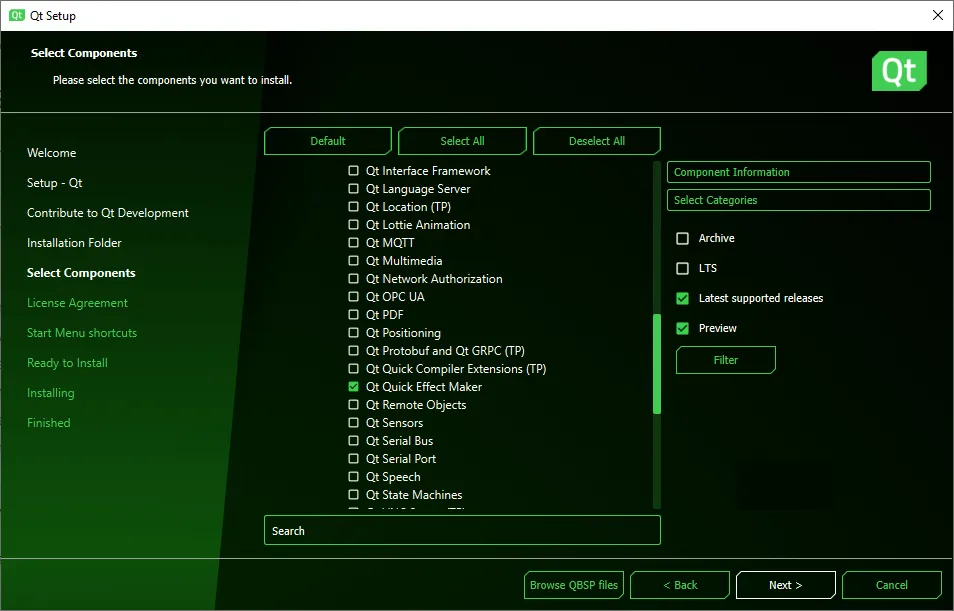
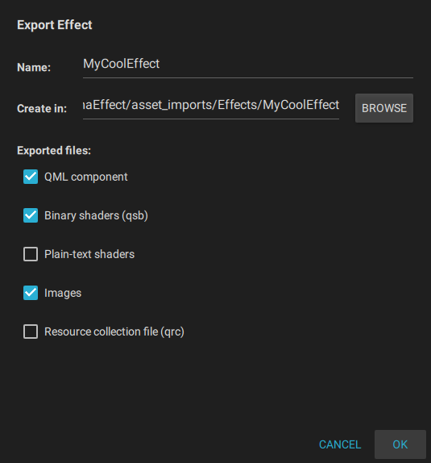

Installing Qt Quick Effect Maker
You can run Qt Quick Effect Maker as a standalone tool but it is also included in Qt Design Studio.
Installing Qt Quick Effect Maker standalone
Install Qt Quick Effect Maker with the Unified Qt Installer.
- Sign in to Qt Account Downloads.
- Download Unified Qt Installer.
- Open the Installer.
- Continue to Installation Folder and select Custom installation.
- Select Next.
- Go to Qt > Qt 6.5 (or newer version) > Additional Libraries and select Qt Quick Effect Maker.
- Complete the installation and close the Unified Qt Installer.

Opening Qt Quick Effect Maker standalone
To open Qt Quick Effect Maker, run qqem.exe located in the bin folder of your Qt installation, for example, C:\Qt\6.6.2\msvc2019_64\bin.
Opening Qt Quick Effect Maker from Qt Design Studio
To open a Qt Quick Effect Maker file in Qt Quick Effect Maker from Qt Design Studio, double-click the file in the Assets view.
Creating an effect file in Qt Design Studio
Create Qt Quick Effect Maker effect (.qep) files in Qt Design Studio and then edit them in Qt Quick Effect Maker.
To create an effect file:
- In Qt Design Studio, right-click in the Assets view and select New Effect. Qt Design Studio creates an effect file and opens it in Qt Quick Effect Maker.
- In Qt Quick Effect Maker:
- Edit the effect.
- Select File > Save.
- Select File > Export.
- With the default settings, select OK.

Now, close Qt Quick Effect Maker and go back to Qt Design Studio.